Forces Between Nanoparticles in a Nematic Host
Tom Fenech
Introduction
- Monte Carlo simulations of nematic liquid crystals
- Supporting experimental work
- Explore continuous parameter space
Motivation
- Technological applications
- High precision displays
- Self-assembled structures
- Two-way process
- Control texture ↔ manipulate particles
The Director
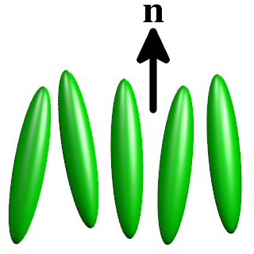- Direction of preferred orientation
Simulation Setup
- Lattice of directors
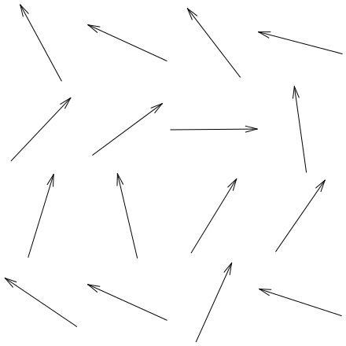
Visualising the Simulation

Frank Equation
- Continuum theory
- Elastic potential energy between directors
- Sum of three components:
Splay
(∇⋅n)2
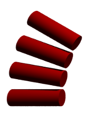+ Twist
(n⋅∇×n)2
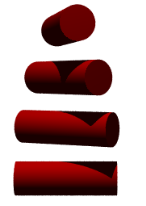+ Bend
(n×∇×n)2
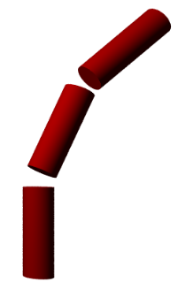Monte Carlo Algorithm
- One by one, each lattice site modified
- New Frank energy evaluated
Monte Carlo Moves
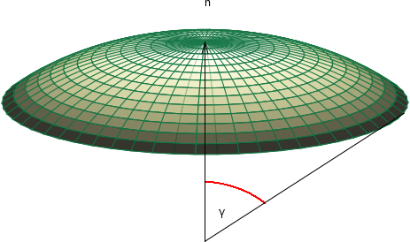- Old director n
- New director selected from
θ [0, γ],
φ [0, 2 π] - γ tuned to keep Monte Carlo acceptance ratio at ½
- Lower γ → higher acceptance
Move Acceptance
- Lower energy → always accepted
- Higher energy → accepted with probability
p = exp(-β(Enew - Eold))
- β: Monte Carlo temperature
(≠ thermodynamic temperature)
Ghost Particles
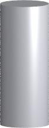- Introduced after the system has equilibrated
- A mixing parameter G
- UFrank = G Uno particle + (1 - G) Uparticle
- G is gradually decreased → particle gradually introduced
Simulated Annealing
- Minimisation of free energy
- Monte Carlo temperature is gradually decreased → β gradually increases
- Rate of cooling is critical
- Too fast → defects are annealed into system
- Too slow → simulations take forever!
2D Results
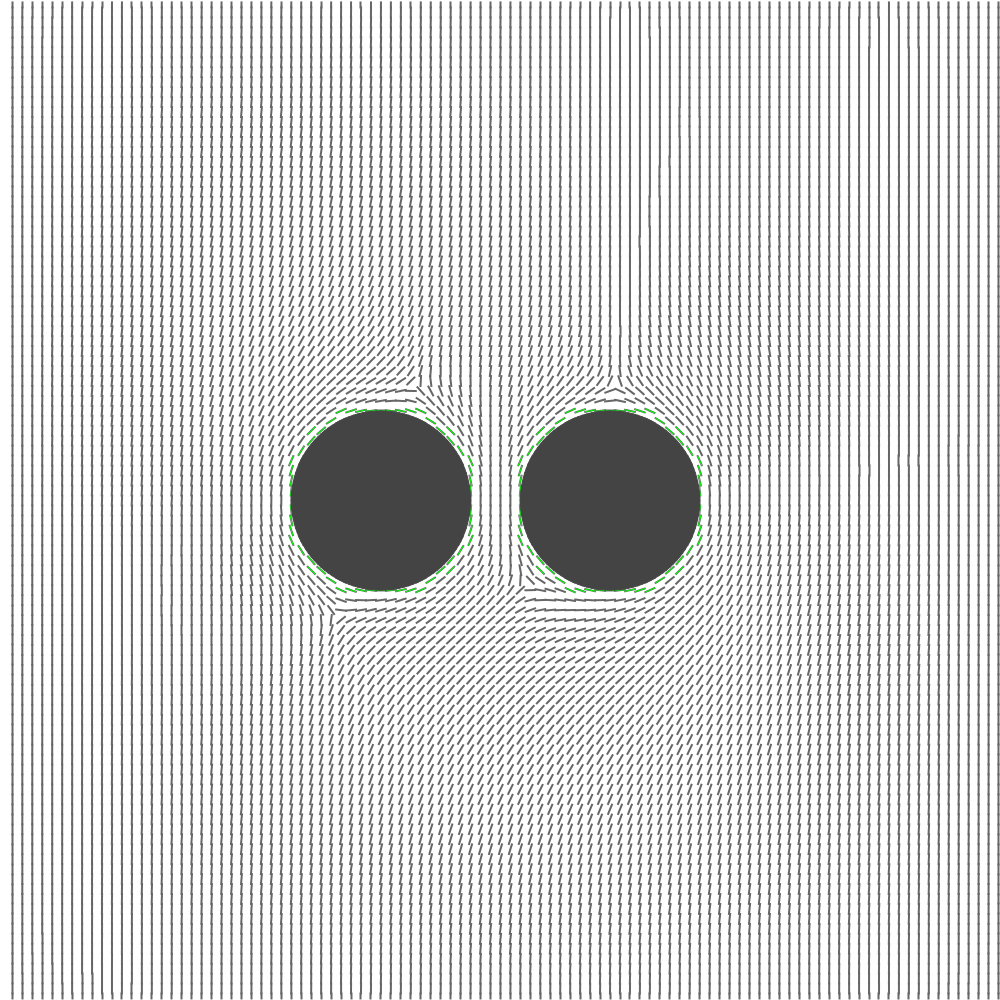- Pairs of circular particles
- Finite box
- Change in energy as a function of separation, orientation
- Gradient in energy → force between particles

Energy Contour Map (Parallel)
- Distance from origin: separation
- Polar angle: orientation
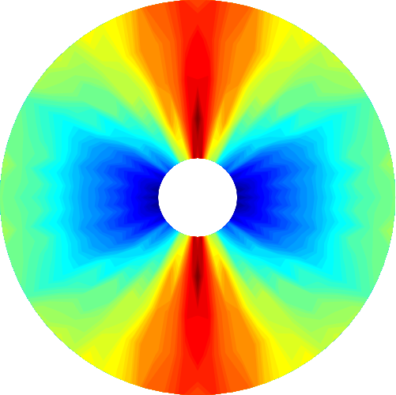
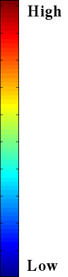
Energy Contour Map (Perpendicular)
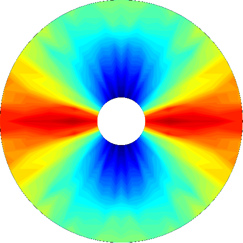
3D Results
- Preferred orientation to field of a cylindrical particle
- Homeotropic surface anchoring
- Two orientations:
Parallel
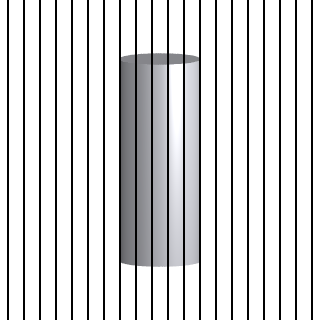Perpendicular
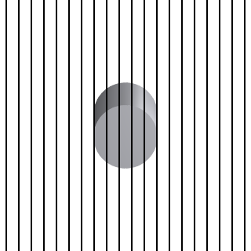Preferred Orientation of a Cylindrical Particle
- Perpendicular to field → lower energy
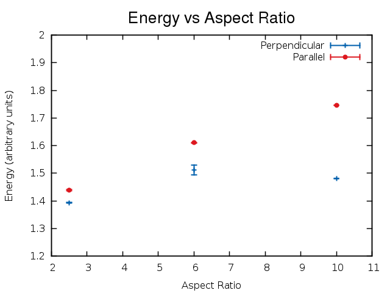
Future Work: Larger Simulations
- Higher resolution lattice
- More circular circles…
- Simulations containing many particles
- Aggregation of colloidal particles
- Observed experimentally
- Not entirely understood
Graphics Processing Unit (GPU) Computing
- Data parallel algorithm → massively parallel architecture
- Current code runs on ~10 CPU cores
- High-end GPUs have ~1000 cores!
- Dramatic performance improvements
- Simulations of larger systems
Thanks To
- Supervisors
- Dr. Simon Hanna
- Prof. Rob Richardson
- EPSRC
- Nanophysics and Soft Matter Group
and thanks for listening.